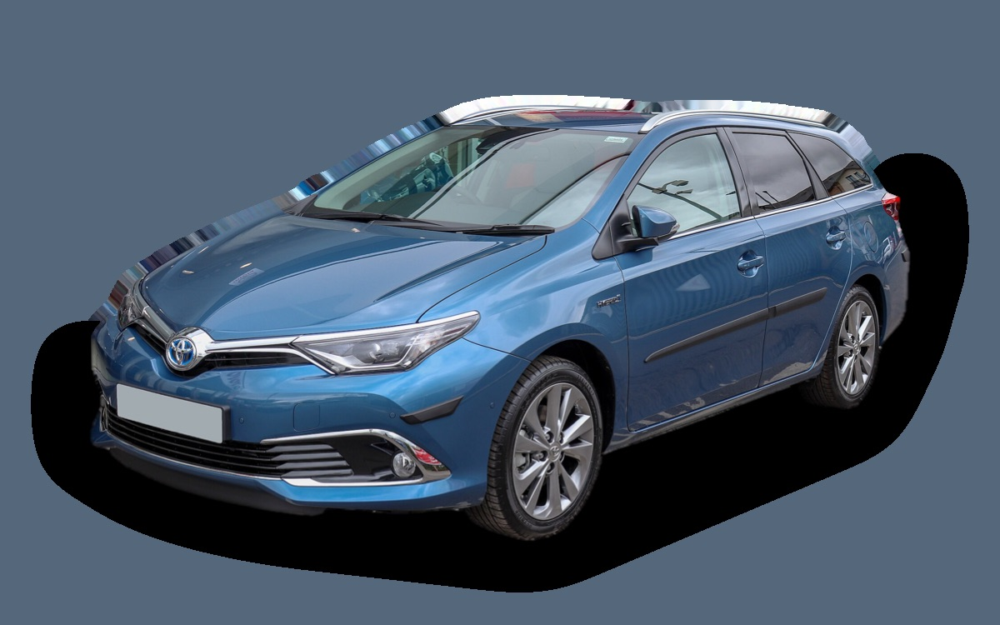
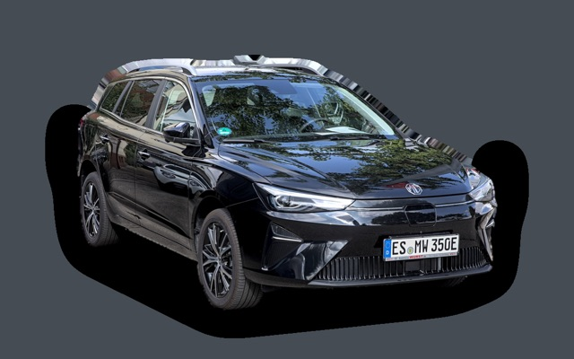

Vad kostar en Toyota Auris Touring Sports per månad?
En Toyota Auris Touring Sports från 2015 kostar cirka 2 537 kr i månaden, allt inräknat.
2 537 krper månad, årsmodell 2015
120 000 krpris, årsmodell 2015
229 900 krsenaste nypris
Cprisvärdhetsbetyg (2015)


Månadskostnad per årsmodell
| Årsmodell | Version i beräkningen | Pris | Per månad | Betyg |
|---|---|---|---|---|
| 2018 | Hybrid 136, Active | 160 000 kr | 2 628 kr | B |
| 2015 | Hybrid 136, Active | 120 000 kr | 2 537 kr | C |
Räknat på 5 års ägande och 1 250 mil per år, med bränslepriser från 2026-10-22. Månadskostnaden innehåller värdeminskning, drivmedel, service och reparationer, försäkring och fordonsskatt.
Så fördelas kostnaden för en 2015:a
- Värdeminskning: 630 kr/mån
- Drivmedel: 981 kr/mån
- Service och reparationer: 661 kr/mån
- Försäkring: 236 kr/mån
- Fordonsskatt: 30 kr/mån
Begagnatpriser i annonser
| Årsmodell | Medianpris | Annonser | Typiskt miltal |
|---|---|---|---|
| 2018 | 144 900 kr | 18 | 13 800 mil |
| 2017 | 149 400 kr | 29 | 14 300 mil |
| 2016 | 149 900 kr | 39 | 14 800 mil |
| 2015 | 120 000 kr | 43 | 15 700 mil |
| 2014 | 119 700 kr | 39 | 16 200 mil |
| 2013 | 109 900 kr | 30 | 16 700 mil |
Medianpriset i svenska annonser per årsmodell i oktober 2026 (källa: Blocket). Annonspriser är utgångspriser, och slutpriset kan bli lägre.
Motorer och versioner
| Motor | Drivmedel | Effekt | 0–100 km/h | Förbrukning (WLTP) | Räckvidd | Årsmodeller | Pristillägg |
|---|---|---|---|---|---|---|---|
| Hybrid 136 | Hybrid | 136 hk | 11,2 s | 3,9 l/100 km | – | 2013–2018 | – |
- Utrustning: Active, Executive (+24 000 kr)
Fakta
- Kaross
- Kombi
- Årsmodeller
- 2013–2018
- Senaste nypris
- 229 900 kr
- Bagage
- 530 liter
- Euro NCAP
- 5 av 5 stjärnor
- Nybilsgaranti
- 10 år
- Driftsäkerhet
- 5 av 5
- Helförsäkring, uppskattning
- 4 700 kr/år
- Service, uppskattning
- 3 300 kr/år
Vanliga fel att ha koll på
- Elektrisk vattenpump (hybrid), reparation cirka 6 000 kr
- Hybridbatteriet tappar celler, reparation cirka 25 000 kr
- Rost på broms- och bränsleledningar, reparation cirka 5 500 kr
Felen gäller vissa motorer och årsmodeller. I kalkylatorn räknas risken för just den version du väljer.
Fördelar och nackdelar
Fördel
Mycket driftsäker hybridkombi, populär som taxi.
Nackdel
Seg acceleration och tillverkas inte längre.
Liknande bilar

MG5 Electric2 486 kr/mån som 2021:a Hyundai i30 Kombi3 043 kr/mån som 2022:a
Hyundai i30 Kombi3 043 kr/mån som 2022:a Dacia Jogger3 111 kr/mån som 2023:a
Dacia Jogger3 111 kr/mån som 2023:a Volvo V503 166 kr/mån som 2009:a
Volvo V503 166 kr/mån som 2009:a Toyota Corolla Touring Sports3 177 kr/mån som 2023:a
Toyota Corolla Touring Sports3 177 kr/mån som 2023:a Ford Mondeo Kombi3 229 kr/mån som 2019:a
Ford Mondeo Kombi3 229 kr/mån som 2019:a
Uppdaterad 2026-10-29 · annonsdata okt 2026